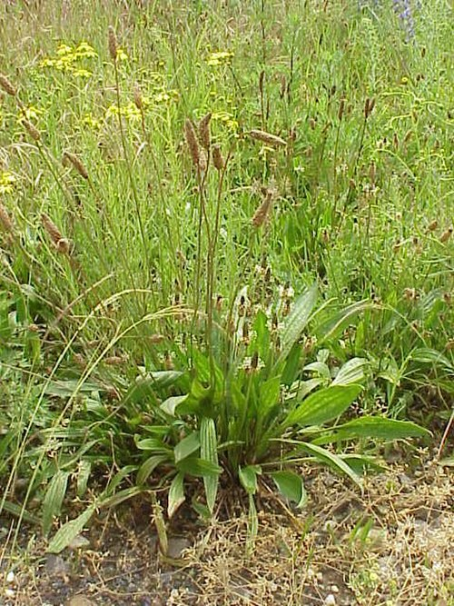
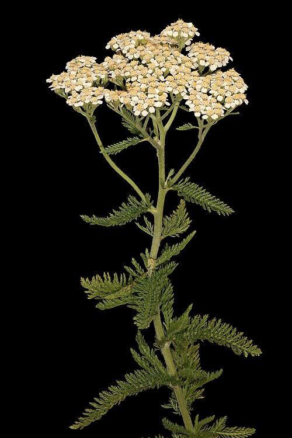

🌱 Wszystkie rośliny

Pokrzywa zwyczajna
Żelazo, krzem, witaminy. Wzmacnia włosy, oczyszcza krew, wspomaga nerki.
🩺 włosy · anemia · nerki
Mniszek lekarski
Wątroba, woreczek żółciowy, moczopędny. Syrop = miód majowy.
💛 na wątrobę · żółć
Babka lancetowata
Kaszel, rany, ukąszenia. Syrop na drogi oddechowe — klasyk w aptece.
🩹 na rany · kaszel · gardło
Rumianek pospolity
Żołądek, nerwy, oczy, skóra. Najpopularniejsze polskie zioło.
🫧 na żołądek · nerwy · skórę
Krwawnik pospolity
Tysiąclistnik. Tamuje krwawienia, reguluje menstruację, trawienie.
🩸 tamuje krew · trawienie
Dziurawiec zwyczajny
Świętojańskie ziele. Antydepresyjny, ochrona wątroby, rany.
🧠 na depresję · nastrój ⚠
Skrzyp polny
Rekordowa zawartość krzemu. Wzmacnia paznokcie, włosy, kości.
💅 paznokcie · kości · włosy
Łopian większy
Oczyszcza krew, zwalcza trądzik. Nalewka na cebulki włosów.
🌿 włosy · trądzik · krew
Mięta pieprzowa
Trawienie, mdłości, migreny, świeży oddech. Olejek chłodzący.
🫙 na trawienie · mdłości
Czarny bez
Kwiaty napotne, owoce na odporność. Klasyka zimowa.
🛡️ odporność · przeziębienie
Lipa drobnolistna
Herbatka od babci. Napotna, uspokajająca. Zbieraj w czerwcu!
😴 przeziębienie · sen · stres
Podbiał pospolity
Pierwszy kwiat wiosny. Suchy kaszel, oskrzela. Krótka kuracja!
🫁 suchy kaszel · oskrzela ⚠
Aloes
Żel na oparzenia, trądzik, rany. Wewnętrznie na odporność i trawienie. Receptura ks. Klimuszki.
🌵 skóra · odporność · trawienie